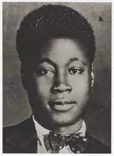

insert links to Buzzfeed quiz, Twine game, etc. here
ref="https://www.buzzfeed.com/jeffhillwriter/the-word-of-man-and-the-word-of-god-frederick-dou-b3kb4eaysx?utm_source=dynamic&utm_campaign=bfsharecopy" ref="file:///Users/jeffhill/Desktop/ENGL4_844.html" ref="https://discord.com/channels/1096082922026573906/1096082922504716288"insert reading responses, OMV explorations, and uncommon DH critic writeup, etc. here
Adrian Wisnicki, Tina Le, Karmen Browitt, Angela Thornburg, Jun Yi Goh, Brett Berg, Thara Michaelis, Alyssa Perrotto, Gregory Payne, Trey Hestermann, Makena Nail, Lyette Erin, Arka Maitra, Akua Manieson, and Andrew Johnson.
